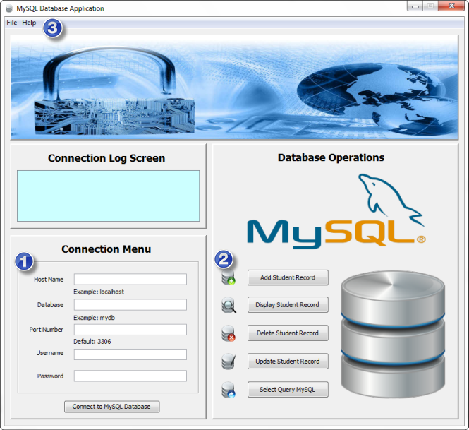

Hello dear user and welcome to MySQL database application
This is the first version of the application (version 1.0)
Upon loading the application you should see the main interface

Key modules are numbered as follow:
Connection module is responsible for authenticating user and establishing the connection between the application and data source
Database operation module is responsible for providing usefull interactive options and functionality in GUI form style
Help module provides a basic user guide and information about the program
Hope you enjoy your experience with MySQL Database Application! Any feedback would be welcomed!